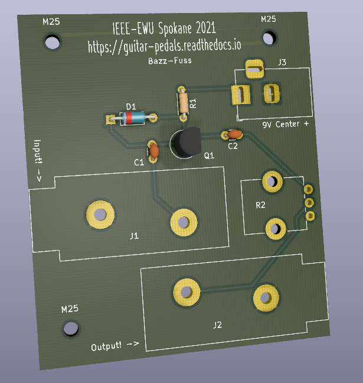
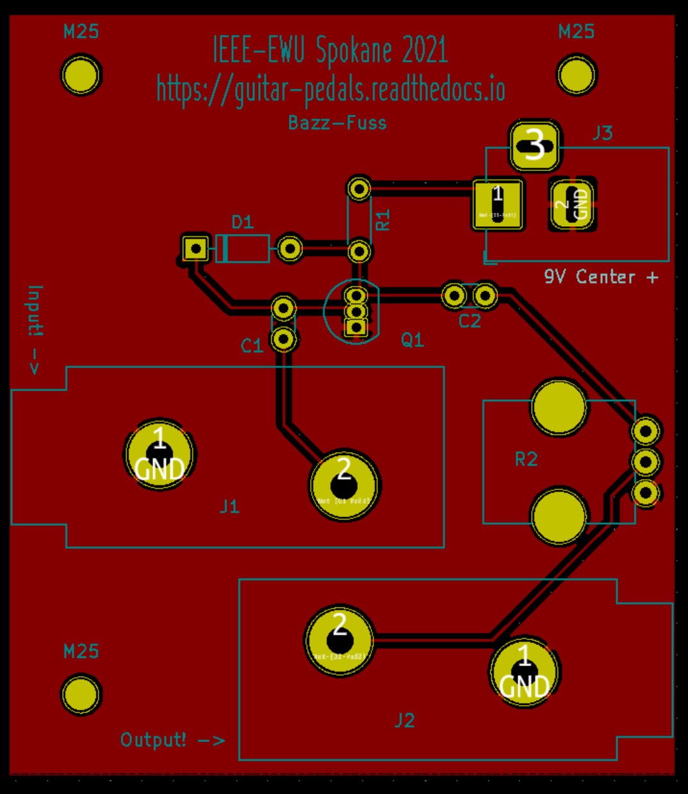

Hi SpaceX! ~==>
Right now, we have one pedal design ready to go! It’s the Bazz-Fuss.
 Project materials
2 x Female 1/4 TRS Audio Jack | Digikey: 2223-MJ-63022A-ND
1 x 100k Potentiometer | Digikey: PTV09A-4015F-B104-ND
1 x 2N3904 NPN Transistor | Digikey: 2368-2N3904-ND
1 x 100k Resistor | Digikey: BC3447CT-ND
1 x 0.1 uF Capacitor | Digikey: 399-C318C104K5R5TACT-ND
1 x 4.7 uF Capacitor | Digikey: 445-FK26X7R1C475KR000-ND
1 x 1N914 Diode | Digikey: 2197-1N914-ND
1 x Barrel Jack | Digikey: CP-002A-ND